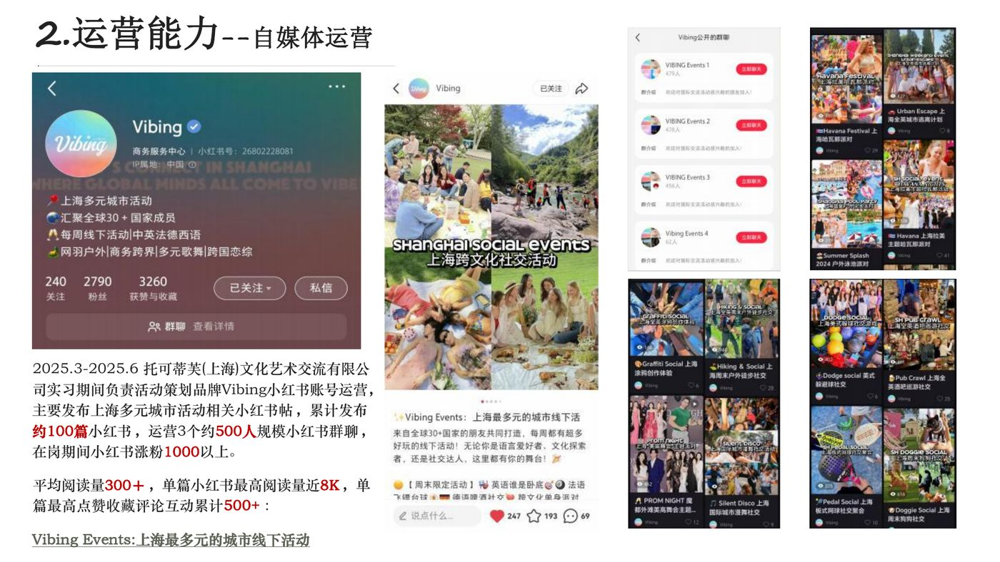

传播学 · 2027 届毕业生 · 上海 / 厦门
把内容做成
可被看见的结果。
你好，我是廖亦琛。东华大学传播学本科在读，聚焦内容运营、社媒增长、社群与活动策划；擅长用内容生产、数据复盘与执行协同，把传播目标落到具体结果。
正在求职 · 内容运营 / 新媒体运营 / 品牌营销 校招岗位
内容运营社媒增长社群运营活动策划数据复盘
01 / 实践概览
有内容，也有结果。
数据来自个人简历与作品集，统计口径为相应实习在岗期间。
02 / 精选案例
让策略在真实场景里发生。
按能力方向筛选，点击案例可查看问题、职责、动作与结果。

01
新加坡政府机关
新加坡政府机关
内容传播支持
参与中新合作相关推文及小绿书生产，结合热点追踪、双语写作、排版和数据复盘，服务 G to B 传播场景。
4W+推文 / 小绿书总阅读4300+关注增长
查看案例详情

02
Vibing 城市活动
Vibing 城市活动
增长与转化
围绕上海多元城市活动，参与小红书、社群、视频号和线下活动的整合运营。
1000+小红书在岗涨粉4万协助转化活动交易额
查看案例详情

03
跨境平台内容矩阵
跨境平台内容矩阵
与 SEO 运营
覆盖公众号、小红书、知乎、百家号及新闻源，使用数据复盘推动内容优化。
700+新闻源累计发布670+新闻源收录
查看案例详情

04
从方案到现场的
从方案到现场的
活动落地
参与活动提案与策划，独立负责上海宾果游戏社交、国际调香工坊两场全流程管理。
2场独立全流程管理80人累计参与人次
查看案例详情
另有平面设计、外研社小红书作品与 SOP 总结等产出，见更多产出 →
03 / 经历轨迹
每一段经历，都在补全运营能力。
从品牌传播到内容矩阵，从活动现场到数据报告。
-
2025.07 — 2025.10
内容运营实习生 厦门指纹科技有限公司
负责百家号、公众号、小红书、知乎等内容矩阵运营与投流；完成周报 12 份，参与 SEO 数据复盘和内容优化。
- 新闻源累计发布 700+ 篇软文，收录 670+ 篇
- 小红书更新 60+ 篇，5 篇笔记浏览破 2k，涨粉 150+
-
2025.03 — 2025.06
运营实习生 托可蒂芙（上海）文化艺术交流有限公司
参与品牌 Vibing 的城市活动营销、社群和小红书运营，负责传播计划推进、活动复盘及跨方协同。
- 管理约 40 个社群，社群拓展 450+ 人次
- 小红书在岗涨粉 1000+，协助转化约 4 万交易额
-
2024.11 — 2025.02
品牌公关运营实习生 罗德传播集团（上海）
协助 G to B 业务，服务新加坡政府机关官方账号的内容运营、双语写作、排版和数据报告。
- 参与完成超 50 篇双语推文与小绿书，总阅读 4W+
- 产出月报 3 份、年报 1 份，关注增长 4300+
-
2024.04 — 2024.08
市场营销实习生 上海育彦文化咨询有限公司
参与问卷设计、客户数据分析、创意海报及多媒体渠道宣传，为课程产品推广提供支持。
- 宣传内容带来数千次曝光浏览
- 协助转化超 3 万销售额
04 / 能力工具箱
内容力 × 数据力 × 执行力。
内容与社媒运营
从选题、生产到分发，持续校准内容与受众的连接；具备多平台内容生产与运营实践。
社群与活动运营
围绕具体活动目标安排营销节点、社群内容和现场支持，熟悉社群维护与跨方协调。
数据分析与复盘
将传播与运营数据整理为可追踪的反馈，用 Excel 完成月报、年报、周报及可视化呈现。
视觉与视频内容
能完成传播所需的基础视觉物料与短视频处理，并理解内容平台的封面、排版与阅读体验。
05 / 生活切片
工作之外，也在认真生活。
几张照片，看看平时的我。左右滑动或点按箭头切换。


06 / 关于我
相信办法总比困难多。
东华大学传播学本科在读，GPA 3.6，专业前 10。除了实习，我也承担过班级团支书、学生会组织部成员、创新创业社团宣传部成员等校园角色。
我享受把模糊目标拆成可执行的节点，也愿意在内容细节、数据变化和协作流程中持续学习。带着“皮格马利翁”式的正向热忱，相信办法总比困难多。
希望了解更多作品细节？
欢迎在招聘沟通中交流。
公众号「企航新加坡」为实习期间参与运营的新加坡政府机关官方账号；手机号未在页面公开，仅保留在简历 PDF 中。